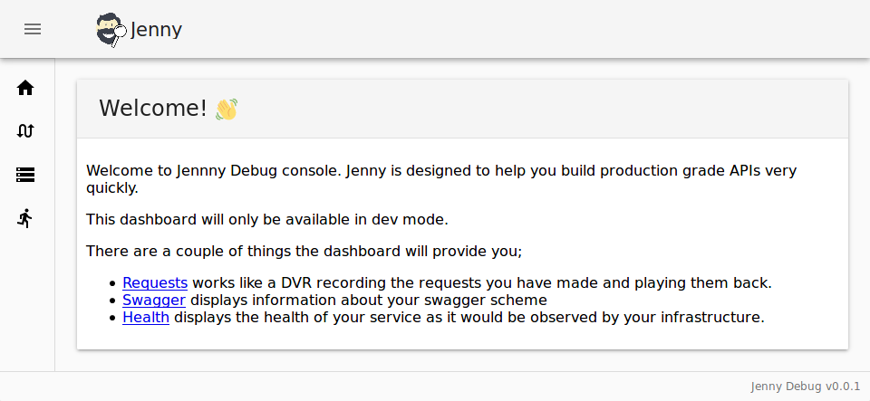

Debug
Jenny has a debug mode, where you can inspect requests, save and replay them, but more impressively it can generate tests from saved requests. 
It's debug mode is inspired by a couple of things like Ngrok and AppEngine.
To start with debug mode just type
jenny serve github.com/Typeform/users/cmd/users
debug mode requires that the package you want to serve is a main package, it
uses the -addr flag to pass in which port the app should listen to, and that's
it :)
var (
addr = flag.String("addr", ":8080", "-addr :8080")
)